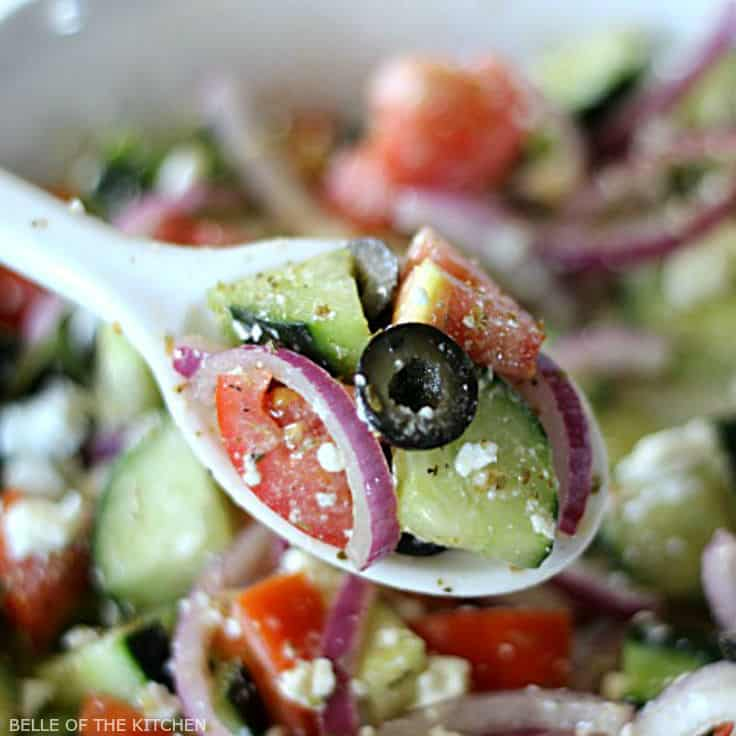
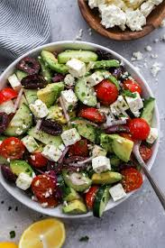

Greek Salad



Ingredients
Dressing
- ¼ cup extra-virgin olive oil
- 3 tablespoons red wine vinegar
- 1 garlic clove, minced
- ½ teaspoon dried oregano
- ¼ teaspoon Dijon mustard
- ¼ teaspoon sea salt
- Freshly ground black pepper
For the salad
- 1 cucumber, cut lengthwise
- 1 green bell pepper, chopped
- 2 cups halved cherry tomatoes
- 5 ounces feta cheese, cut into cubes
- ⅓ cup thinly sliced red onion
- ⅓ cup pitted Kalamata olives
- ⅓ cup fresh mint leaves
Instructions
- Make the dressing: In a small bowl, whisk together the olive oil, vinegar, garlic, oregano, mustard, salt, and several grinds of pepper.
- On a large platter, arrange the cucumber, green pepper, cherry tomatoes, feta cheese, red onions, and olives.
- Drizzle with the dressing and very gently toss.
- Sprinkle with a few generous pinches of oregano and top with the mint leaves.
- Season to taste and serve.